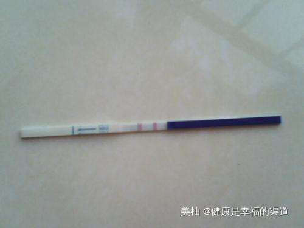

真心开心啊，备孕了八个月了终于测到了梦寐以求的早早孕强阳了，我的鸡宝贝终于来了。连续前四个月都是被稀里糊涂地大白板，给打击了回来。这次备孕我是很认真的，皇天不负有心人啊，我终于成功了。
做阴超测卵泡才得知自己卵泡有问题，长得小，发育得不好。从网上了解过西药又刺激卵巢，又有副作用的。
这次9月12号的经期12天测泡1.4*1.3，15天阴道测排卵
子宫内膜厚1.32CM，呈B型改变。
左卵巢见多个无回声，最大一个无回声约2.1*1.8*1.9cm，测完后心跳好快，生怕有问题，妇科医生说没问题，说我的卵泡现在长得很好的，很漂亮呵呵。说这两天同房很快就会有的。
回想最近几个月，我一直在我们这里一个很有名的老师这调理身子。老师给了我很大的信心，后来我发现中医都会给你很大的自信，我去的时候病人很多，在了解了我的情况之后，直接把脉后配药，一边开方，一边还问我，是不是平时喜欢吃寒食、是不是经常不运动，是不是喜欢熬夜等等问题，开完方子老师跟我说，我的问题主要是因为平时生活习惯不好，天长日久积攒下来，导致体内血滞气淤，给我开了方子调理，顺便还交了我几个改善生活习惯的小窍门，还挺好用的。
这位老师给了我很大的信心，他跟我说，会调理好的，不要担心，墙上还挂了很多可爱宝宝的照片，说这就是在他的调理下康复的夫妻刚生下来的宝宝。并且老师让我加了他微信（ ），让我有问题及时反馈。
后来我妈跟我说，这个老师很厉害，有不少治好的案例，怪不得每次复诊对会发现去看老师的人把房间都占满了，大多都是看调理例假的，也有一些看疑难杂症的。
看来这趟真没白费功夫。回去赶紧测排卵试纸，等到了日子后测三个试纸都是强阳，晚上安排一次。27号下午4点测到试纸开始转弱了，饭后8点安排功课。28号的早上为了安全起见早上又补习一次。总得来说就做了三次功课。没想到这次胜算率比较大。7.10号早上的晨尿就测到了粉印，之后这几天上早上颜色越来越深了，总之是可以确定自己好孕了。
回首备孕历程，虽不像别的姐妹那么难，但也着实让我体会到了求之不孕的滋味了，现在终于可以划上个句号了，迎接我的将会是怀胎十月的新征程，这宝宝来之不易，我一定会小心养胎，不让胎儿有半点伤害，我会用心去做胎教，注重营养的搭配，想天天有好心情，不做伤害胎儿的任何事情，呵呵，怀孕后的事情，我策划很久了呢，最后把老师微信分享给姐妹（ ），也希望姐妹们都早日当上妈妈。